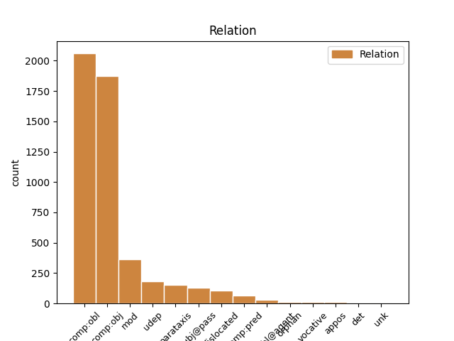
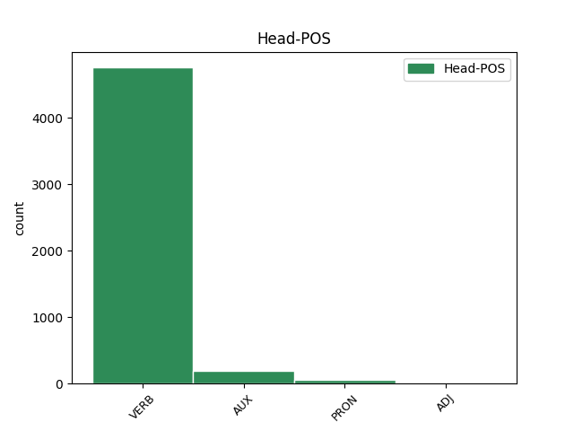
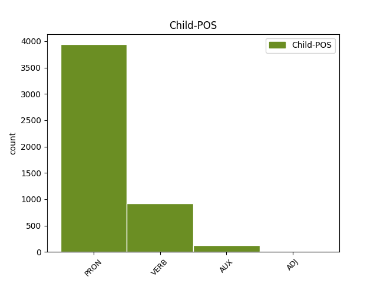

Distribution of features within this leaf



Agreement Rules sorted by frequency.
- When the dependent token is the oblique complements(comp:obl) of the head token, and the dependent token is PRON.
1 Ἰδοὺ _ _ _ _ 0 _ _ _
2 ἔρχομαι _ _ _ _ 0 _ _ _
3 ταχύ _ _ _ _ 0 _ _ _
4 καὶ _ _ _ _ 0 _ _ _
5 ὁ _ _ _ _ 0 _ _ _
6 μισθός _ _ _ _ 0 _ _ _
7 μου _ _ _ _ 0 _ _ _
8 μετ’ _ _ _ _ 0 _ _ _
9 ἐμοῦ _ _ _ _ 0 _ _ _
10 ἀποδοῦναι _ _ _ _ 0 _ _ _
11 ἑκάστῳ _ _ _ _ 0 _ _ _
12 ὡς _ _ _ _ 0 _ _ _
13 τὸ _ _ _ _ 0 _ _ _
14 ἔργον _ _ _ _ 0 _ _ _
15 ἐστὶν εἰμί AUX V- Mood=Ind|Number=Sing|Person=3|Tense=Pres|VerbForm=Fin|Voice=Act 0 _ _ _
16 αὐτοῦ αὐτός PRON Pp Case=Gen|Gender=Masc|Number=Sing|Person=3|PronType=Prs 15 comp:obl _ ref=REV_22.12
1 ἡ _ _ _ _ 0 _ _ _
2 γὰρ _ _ _ _ 0 _ _ _
3 δόξα _ _ _ _ 0 _ _ _
4 τοῦ _ _ _ _ 0 _ _ _
5 θεοῦ _ _ _ _ 0 _ _ _
6 ἐφώτισεν φωτίζω VERB V- Aspect=Perf|Mood=Ind|Number=Sing|Person=3|Tense=Past|VerbForm=Fin|Voice=Act 0 _ _ _
7 αὐτήν αὐτός PRON Pp Case=Acc|Gender=Fem|Number=Sing|Person=3|PronType=Prs 6 comp:obj _ ref=REV_21.23
8 καὶ _ _ _ _ 0 _ _ _
9 ὁ _ _ _ _ 0 _ _ _
10 λύχνος _ _ _ _ 0 _ _ _
11 αὐτῆς _ _ _ _ 0 _ _ _
12 τὸ _ _ _ _ 0 _ _ _
13 ἀρνίον _ _ _ _ 0 _ _ _
1 Καὶ _ _ _ _ 0 _ _ _
2 κλαύσουσιν _ _ _ _ 0 _ _ _
3 καὶ _ _ _ _ 0 _ _ _
4 κόψονται κόπτω VERB V- Mood=Ind|Number=Plur|Person=3|Tense=Fut|VerbForm=Fin|Voice=Mid 0 _ _ _
5 ἐπ’ _ _ _ _ 0 _ _ _
6 αὐτὴν _ _ _ _ 0 _ _ _
7 οἱ _ _ _ _ 0 _ _ _
8 βασιλεῖς _ _ _ _ 0 _ _ _
9 τῆς _ _ _ _ 0 _ _ _
10 γῆς _ _ _ _ 0 _ _ _
11 οἱ _ _ _ _ 0 _ _ _
12 μετ’ _ _ _ _ 0 _ _ _
13 αὐτῆς _ _ _ _ 0 _ _ _
14 πορνεύσαντες _ _ _ _ 0 _ _ _
15 καὶ _ _ _ _ 0 _ _ _
16 στρηνιάσαντες _ _ _ _ 0 _ _ _
17 ὅταν _ _ _ _ 0 _ _ _
18 βλέπωσιν βλέπω VERB V- Mood=Sub|Number=Plur|Person=3|Tense=Pres|VerbForm=Fin|Voice=Act 4 mod _ ref=REV_18.9
19 τὸν _ _ _ _ 0 _ _ _
20 καπνὸν _ _ _ _ 0 _ _ _
21 τῆς _ _ _ _ 0 _ _ _
22 πυρώσεως _ _ _ _ 0 _ _ _
23 αὐτῆς _ _ _ _ 0 _ _ _
24 ἀπὸ _ _ _ _ 0 _ _ _
25 μακρόθεν _ _ _ _ 0 _ _ _
26 ἑστηκότες _ _ _ _ 0 _ _ _
27 διὰ _ _ _ _ 0 _ _ _
28 τὸν _ _ _ _ 0 _ _ _
29 φόβον _ _ _ _ 0 _ _ _
30 τοῦ _ _ _ _ 0 _ _ _
31 βασανισμοῦ _ _ _ _ 0 _ _ _
32 αὐτῆς _ _ _ _ 0 _ _ _
33 λέγοντες _ _ _ _ 0 _ _ _
1 καὶ _ _ _ _ 0 _ _ _
2 ἐδόθη _ _ _ _ 0 _ _ _
3 αὐτῷ _ _ _ _ 0 _ _ _
4 δοῦναι _ _ _ _ 0 _ _ _
5 πνεῦμα _ _ _ _ 0 _ _ _
6 τῇ _ _ _ _ 0 _ _ _
7 εἰκόνι _ _ _ _ 0 _ _ _
8 τοῦ _ _ _ _ 0 _ _ _
9 θηρίου _ _ _ _ 0 _ _ _
10 ἵνα _ _ _ _ 0 _ _ _
11 καὶ _ _ _ _ 0 _ _ _
12 λαλήσῃ _ _ _ _ 0 _ _ _
13 ἡ _ _ _ _ 0 _ _ _
14 εἰκὼν _ _ _ _ 0 _ _ _
15 τοῦ _ _ _ _ 0 _ _ _
16 θηρίου _ _ _ _ 0 _ _ _
17 καὶ _ _ _ _ 0 _ _ _
18 ποιήσῃ ποιέω VERB V- Aspect=Perf|Mood=Sub|Number=Sing|Person=3|Tense=Past|VerbForm=Fin|Voice=Act 0 _ _ _
19 ὅσοι _ _ _ _ 0 _ _ _
20 ἐὰν _ _ _ _ 0 _ _ _
21 μὴ _ _ _ _ 0 _ _ _
22 προσκυνήσουσιν _ _ _ _ 0 _ _ _
23 τῇ _ _ _ _ 0 _ _ _
24 εἰκόνι _ _ _ _ 0 _ _ _
25 τοῦ _ _ _ _ 0 _ _ _
26 θηρίου _ _ _ _ 0 _ _ _
27 ἀποκτανθῶσιν ἀποκτείνω VERB V- Aspect=Perf|Mood=Sub|Number=Plur|Person=3|Tense=Past|VerbForm=Fin|Voice=Pass 18 comp:obj _ ref=REV_13.15
1 Παῦλος _ _ _ _ 0 _ _ _
2 δοῦλος _ _ _ _ 0 _ _ _
3 θεοῦ _ _ _ _ 0 _ _ _
4 ἀπόστολος _ _ _ _ 0 _ _ _
5 δὲ _ _ _ _ 0 _ _ _
6 Ἰησοῦ _ _ _ _ 0 _ _ _
7 Χριστοῦ _ _ _ _ 0 _ _ _
8 κατὰ _ _ _ _ 0 _ _ _
9 πίστιν _ _ _ _ 0 _ _ _
10 ἐκλεκτῶν _ _ _ _ 0 _ _ _
11 θεοῦ _ _ _ _ 0 _ _ _
12 καὶ _ _ _ _ 0 _ _ _
13 ἐπίγνωσιν _ _ _ _ 0 _ _ _
14 ἀληθείας _ _ _ _ 0 _ _ _
15 τῆς _ _ _ _ 0 _ _ _
16 κατ’ _ _ _ _ 0 _ _ _
17 εὐσέβειαν _ _ _ _ 0 _ _ _
18 ἐπ’ _ _ _ _ 0 _ _ _
19 ἐλπίδι _ _ _ _ 0 _ _ _
20 ζωῆς _ _ _ _ 0 _ _ _
21 αἰωνίου _ _ _ _ 0 _ _ _
22 ἣν _ _ _ _ 0 _ _ _
23 ἐπηγγείλατο _ _ _ _ 0 _ _ _
24 ὁ _ _ _ _ 0 _ _ _
25 ἀψευδὴς _ _ _ _ 0 _ _ _
26 θεὸς _ _ _ _ 0 _ _ _
27 πρὸ _ _ _ _ 0 _ _ _
28 χρόνων _ _ _ _ 0 _ _ _
29 αἰωνίων _ _ _ _ 0 _ _ _
30 ἐφανέρωσεν _ _ _ _ 0 _ _ _
31 δὲ _ _ _ _ 0 _ _ _
32 καιροῖς _ _ _ _ 0 _ _ _
33 ἰδίοις _ _ _ _ 0 _ _ _
34 τὸν _ _ _ _ 0 _ _ _
35 λόγον _ _ _ _ 0 _ _ _
36 αὐτοῦ _ _ _ _ 0 _ _ _
37 ἐν _ _ _ _ 0 _ _ _
38 κηρύγματι _ _ _ _ 0 _ _ _
39 ὃ _ _ _ _ 0 _ _ _
40 ἐπιστεύθην πιστεύω VERB V- Aspect=Perf|Mood=Ind|Number=Sing|Person=1|Tense=Past|VerbForm=Fin|Voice=Pass 0 _ _ _
41 ἐγὼ ἐγώ PRON Pp Case=Nom|Gender=Masc|Number=Sing|Person=1|PronType=Prs 40 subj@pass _ ref=TIT_1.3
42 κατ’ _ _ _ _ 0 _ _ _
43 ἐπιταγὴν _ _ _ _ 0 _ _ _
44 τοῦ _ _ _ _ 0 _ _ _
45 σωτῆρος _ _ _ _ 0 _ _ _
46 ἡμῶν _ _ _ _ 0 _ _ _
47 θεοῦ _ _ _ _ 0 _ _ _
48 Τίτῳ _ _ _ _ 0 _ _ _
49 γνησίῳ _ _ _ _ 0 _ _ _
50 τέκνῳ _ _ _ _ 0 _ _ _
51 κατὰ _ _ _ _ 0 _ _ _
52 κοινὴν _ _ _ _ 0 _ _ _
53 πίστιν _ _ _ _ 0 _ _ _
1 Καὶ _ _ _ _ 0 _ _ _
2 εἶδον _ _ _ _ 0 _ _ _
3 θρόνον _ _ _ _ 0 _ _ _
4 μέγαν _ _ _ _ 0 _ _ _
5 λευκὸν _ _ _ _ 0 _ _ _
6 καὶ _ _ _ _ 0 _ _ _
7 τὸν _ _ _ _ 0 _ _ _
8 καθήμενον _ _ _ _ 0 _ _ _
9 ἐπ’ _ _ _ _ 0 _ _ _
10 αὐτόν _ _ _ _ 0 _ _ _
11 οὗ _ _ _ _ 0 _ _ _
12 ἀπὸ _ _ _ _ 0 _ _ _
13 τοῦ _ _ _ _ 0 _ _ _
14 προσώπου _ _ _ _ 0 _ _ _
15 ἔφυγεν _ _ _ _ 0 _ _ _
16 ἡ _ _ _ _ 0 _ _ _
17 γῆ _ _ _ _ 0 _ _ _
18 καὶ _ _ _ _ 0 _ _ _
19 ὁ _ _ _ _ 0 _ _ _
20 οὐρανός _ _ _ _ 0 _ _ _
21 καὶ _ _ _ _ 0 _ _ _
22 τόπος _ _ _ _ 0 _ _ _
23 οὐχ _ _ _ _ 0 _ _ _
24 εὑρέθη εὑρίσκω VERB V- Aspect=Perf|Mood=Ind|Number=Sing|Person=3|Tense=Past|VerbForm=Fin|Voice=Pass 0 _ _ _
25 αὐτοῖς αὐτός PRON Pp Case=Dat|Gender=Masc|Number=Plur|Person=3|PronType=Prs 24 udep _ ref=REV_20.11
1 καὶ _ _ _ _ 0 _ _ _
2 καθ’ _ _ _ _ 0 _ _ _
3 ὅσον _ _ _ _ 0 _ _ _
4 ἀπόκειται ἀπόκειμαι VERB V- Mood=Ind|Number=Sing|Person=3|Tense=Pres|VerbForm=Fin|Voice=Mid 28 dislocated _ ref=HEB_9.27
5 τοῖς _ _ _ _ 0 _ _ _
6 ἀνθρώποις _ _ _ _ 0 _ _ _
7 ἅπαξ _ _ _ _ 0 _ _ _
8 ἀποθανεῖν _ _ _ _ 0 _ _ _
9 μετὰ _ _ _ _ 0 _ _ _
10 δὲ _ _ _ _ 0 _ _ _
11 τοῦτο _ _ _ _ 0 _ _ _
12 κρίσις _ _ _ _ 0 _ _ _
13 οὕτως _ _ _ _ 0 _ _ _
14 καὶ _ _ _ _ 0 _ _ _
15 ὁ _ _ _ _ 0 _ _ _
16 Χριστός _ _ _ _ 0 _ _ _
17 ἅπαξ _ _ _ _ 0 _ _ _
18 προσενεχθεὶς _ _ _ _ 0 _ _ _
19 εἰς _ _ _ _ 0 _ _ _
20 τὸ _ _ _ _ 0 _ _ _
21 πολλῶν _ _ _ _ 0 _ _ _
22 ἀνενεγκεῖν _ _ _ _ 0 _ _ _
23 ἁμαρτίας _ _ _ _ 0 _ _ _
24 ἐκ _ _ _ _ 0 _ _ _
25 δευτέρου _ _ _ _ 0 _ _ _
26 χωρὶς _ _ _ _ 0 _ _ _
27 ἁμαρτίας _ _ _ _ 0 _ _ _
28 ὀφθήσεται ὁράω VERB V- Mood=Ind|Number=Sing|Person=3|Tense=Fut|VerbForm=Fin|Voice=Pass 0 _ _ _
29 τοῖς _ _ _ _ 0 _ _ _
30 αὐτὸν _ _ _ _ 0 _ _ _
31 ἀπεκδεχομένοις _ _ _ _ 0 _ _ _
32 εἰς _ _ _ _ 0 _ _ _
33 σωτηρίαν _ _ _ _ 0 _ _ _
1 εἰ _ _ _ _ 0 _ _ _
2 μέντοι _ _ _ _ 0 _ _ _
3 νόμον _ _ _ _ 0 _ _ _
4 τελεῖτε _ _ _ _ 0 _ _ _
5 βασιλικὸν _ _ _ _ 0 _ _ _
6 κατὰ _ _ _ _ 0 _ _ _
7 τὴν _ _ _ _ 0 _ _ _
8 γραφήν _ _ _ _ 0 _ _ _
9 ἀγαπήσεις ἀγαπάω VERB V- Mood=Ind|Number=Sing|Person=2|Tense=Fut|VerbForm=Fin|Voice=Act 16 parataxis _ ref=JAS_2.8
10 τὸν _ _ _ _ 0 _ _ _
11 πλησίον _ _ _ _ 0 _ _ _
12 σου _ _ _ _ 0 _ _ _
13 ὡς _ _ _ _ 0 _ _ _
14 σεαυτόν _ _ _ _ 0 _ _ _
15 καλῶς _ _ _ _ 0 _ _ _
16 ποιεῖτε ποιέω VERB V- Mood=Ind|Number=Plur|Person=2|Tense=Pres|VerbForm=Fin|Voice=Act 0 _ _ _
1 κατενόησεν _ _ _ _ 0 _ _ _
2 γὰρ _ _ _ _ 0 _ _ _
3 ἑαυτὸν _ _ _ _ 0 _ _ _
4 καὶ _ _ _ _ 0 _ _ _
5 ἀπελήλυθεν _ _ _ _ 0 _ _ _
6 καὶ _ _ _ _ 0 _ _ _
7 εὐθέως _ _ _ _ 0 _ _ _
8 ἐπελάθετο ἐπιλανθάνομαι VERB V- Aspect=Perf|Mood=Ind|Number=Sing|Person=3|Tense=Past|VerbForm=Fin|Voice=Mid 0 _ _ _
9 ὁποῖος _ _ _ _ 0 _ _ _
10 ἦν εἰμί AUX V- Aspect=Imp|Mood=Ind|Number=Sing|Person=3|Tense=Past|VerbForm=Fin|Voice=Act 8 comp:obj _ LId=1|ref=JAS_1.24
1 οὐκ _ _ _ _ 0 _ _ _
2 ἔφερον φέρω VERB V- Aspect=Imp|Mood=Ind|Number=Plur|Person=3|Tense=Past|VerbForm=Fin|Voice=Act 0 _ _ _
3 γὰρ _ _ _ _ 0 _ _ _
4 τὸ _ _ _ _ 0 _ _ _
5 διαστελλόμενον _ _ _ _ 0 _ _ _
6 καὶ _ _ _ _ 0 _ _ _
7 ἄν _ _ _ _ 0 _ _ _
8 θηρίον _ _ _ _ 0 _ _ _
9 θίγῃ _ _ _ _ 0 _ _ _
10 τοῦ _ _ _ _ 0 _ _ _
11 ὄρους _ _ _ _ 0 _ _ _
12 λιθοβοληθήσεται _ _ _ _ 0 _ _ _
13 καί _ _ _ _ 0 _ _ _
14 οὕτω _ _ _ _ 0 _ _ _
15 φοβερὸν _ _ _ _ 0 _ _ _
16 ἦν εἰμί AUX V- Aspect=Imp|Mood=Ind|Number=Sing|Person=3|Tense=Past|VerbForm=Fin|Voice=Act 2 parataxis _ LId=1|ref=HEB_12.21
17 τὸ _ _ _ _ 0 _ _ _
18 φανταζόμενον _ _ _ _ 0 _ _ _
19 Μωϋσῆς _ _ _ _ 0 _ _ _
20 εἶπεν _ _ _ _ 0 _ _ _
1 μακάριοι _ _ _ _ 0 _ _ _
2 οἱ _ _ _ _ 0 _ _ _
3 πλύνοντες _ _ _ _ 0 _ _ _
4 τὰς _ _ _ _ 0 _ _ _
5 στολὰς _ _ _ _ 0 _ _ _
6 αὐτῶν _ _ _ _ 0 _ _ _
7 ἵνα _ _ _ _ 0 _ _ _
8 ἔσται εἰμί AUX V- Mood=Ind|Number=Sing|Person=3|Tense=Fut|VerbForm=Fin|Voice=Mid 0 _ _ _
9 ἡ _ _ _ _ 0 _ _ _
10 ἐξουσία _ _ _ _ 0 _ _ _
11 αὐτῶν αὐτός PRON Pp Case=Gen|Gender=Masc|Number=Plur|Person=3|PronType=Prs 8 comp:pred _ ref=REV_22.14
12 ἐπὶ _ _ _ _ 0 _ _ _
13 τὸ _ _ _ _ 0 _ _ _
14 ξύλον _ _ _ _ 0 _ _ _
15 τῆς _ _ _ _ 0 _ _ _
16 ζωῆς _ _ _ _ 0 _ _ _
17 καὶ _ _ _ _ 0 _ _ _
18 τοῖς _ _ _ _ 0 _ _ _
19 πυλῶσιν _ _ _ _ 0 _ _ _
20 εἰσέλθωσιν _ _ _ _ 0 _ _ _
21 εἰς _ _ _ _ 0 _ _ _
22 τὴν _ _ _ _ 0 _ _ _
23 πόλιν _ _ _ _ 0 _ _ _
1 καὶ _ _ _ _ 0 _ _ _
2 ἐδόθη _ _ _ _ 0 _ _ _
3 αὐτῷ _ _ _ _ 0 _ _ _
4 δοῦναι _ _ _ _ 0 _ _ _
5 πνεῦμα _ _ _ _ 0 _ _ _
6 τῇ _ _ _ _ 0 _ _ _
7 εἰκόνι _ _ _ _ 0 _ _ _
8 τοῦ _ _ _ _ 0 _ _ _
9 θηρίου _ _ _ _ 0 _ _ _
10 ἵνα _ _ _ _ 0 _ _ _
11 καὶ _ _ _ _ 0 _ _ _
12 λαλήσῃ _ _ _ _ 0 _ _ _
13 ἡ _ _ _ _ 0 _ _ _
14 εἰκὼν _ _ _ _ 0 _ _ _
15 τοῦ _ _ _ _ 0 _ _ _
16 θηρίου _ _ _ _ 0 _ _ _
17 καὶ _ _ _ _ 0 _ _ _
18 ποιήσῃ _ _ _ _ 0 _ _ _
19 ὅσοι _ _ _ _ 0 _ _ _
20 ἐὰν _ _ _ _ 0 _ _ _
21 μὴ _ _ _ _ 0 _ _ _
22 προσκυνήσουσιν προσκυνέω VERB V- Mood=Ind|Number=Plur|Person=3|Tense=Fut|VerbForm=Fin|Voice=Act 27 subj@pass _ ref=REV_13.15
23 τῇ _ _ _ _ 0 _ _ _
24 εἰκόνι _ _ _ _ 0 _ _ _
25 τοῦ _ _ _ _ 0 _ _ _
26 θηρίου _ _ _ _ 0 _ _ _
27 ἀποκτανθῶσιν ἀποκτείνω VERB V- Aspect=Perf|Mood=Sub|Number=Plur|Person=3|Tense=Past|VerbForm=Fin|Voice=Pass 0 _ _ _
1 ὥσπερ _ _ _ _ 0 _ _ _
2 γὰρ _ _ _ _ 0 _ _ _
3 τὸ _ _ _ _ 0 _ _ _
4 σῶμα _ _ _ _ 0 _ _ _
5 χωρὶς _ _ _ _ 0 _ _ _
6 πνεύματος _ _ _ _ 0 _ _ _
7 νεκρόν _ _ _ _ 0 _ _ _
8 ἐστιν εἰμί AUX V- Mood=Ind|Number=Sing|Person=3|Tense=Pres|VerbForm=Fin|Voice=Act 16 mod _ LId=1|ref=JAS_2.26
9 οὕτως _ _ _ _ 0 _ _ _
10 καὶ _ _ _ _ 0 _ _ _
11 ἡ _ _ _ _ 0 _ _ _
12 πίστις _ _ _ _ 0 _ _ _
13 χωρὶς _ _ _ _ 0 _ _ _
14 ἔργων _ _ _ _ 0 _ _ _
15 νεκρά _ _ _ _ 0 _ _ _
16 ἐστιν εἰμί AUX V- Mood=Ind|Number=Sing|Person=3|Tense=Pres|VerbForm=Fin|Voice=Act 0 _ _ _
1 καὶ _ _ _ _ 0 _ _ _
2 αὐτοὶ _ _ _ _ 0 _ _ _
3 ἐξηγοῦντο _ _ _ _ 0 _ _ _
4 τὰ _ _ _ _ 0 _ _ _
5 ἐν _ _ _ _ 0 _ _ _
6 τῇ _ _ _ _ 0 _ _ _
7 ὁδῷ _ _ _ _ 0 _ _ _
8 καὶ _ _ _ _ 0 _ _ _
9 ὡς _ _ _ _ 0 _ _ _
10 ἐγνώσθη γιγνώσκω VERB V- Aspect=Perf|Mood=Ind|Number=Sing|Person=3|Tense=Past|VerbForm=Fin|Voice=Pass 0 _ _ _
11 αὐτοῖς αὐτός PRON Pp Case=Dat|Gender=Masc|Number=Plur|Person=3|PronType=Prs 10 comp:obl@agent _ ref=LUKE_24.35
12 ἐν _ _ _ _ 0 _ _ _
13 τῇ _ _ _ _ 0 _ _ _
14 κλάσει _ _ _ _ 0 _ _ _
15 τοῦ _ _ _ _ 0 _ _ _
16 ἄρτου _ _ _ _ 0 _ _ _
1 οὗτοί _ _ _ _ 0 _ _ _
2 εἰσιν εἰμί AUX V- Mood=Ind|Number=Plur|Person=3|Tense=Pres|VerbForm=Fin|Voice=Act 0 _ _ _
3 οἳ _ _ _ _ 0 _ _ _
4 μετὰ _ _ _ _ 0 _ _ _
5 γυναικῶν _ _ _ _ 0 _ _ _
6 οὐκ _ _ _ _ 0 _ _ _
7 ἐμολύνθησαν μολύνω VERB V- Aspect=Perf|Mood=Ind|Number=Plur|Person=3|Tense=Past|VerbForm=Fin|Voice=Pass 2 comp:pred _ ref=REV_14.4
1 ἀλλὰ _ _ _ _ 0 _ _ _
2 ἕκαστος _ _ _ _ 0 _ _ _
3 ἴδιον _ _ _ _ 0 _ _ _
4 ἔχει _ _ _ _ 0 _ _ _
5 χάρισμα _ _ _ _ 0 _ _ _
6 ἐκ _ _ _ _ 0 _ _ _
7 θεοῦ _ _ _ _ 0 _ _ _
8 ὁ ὁ PRON Pp Case=Nom|Gender=Masc|Number=Sing|Person=3|PronType=Prs 0 _ _ _
9 μὲν _ _ _ _ 0 _ _ _
10 οὕτως _ _ _ _ 0 _ _ _
11 ὁ ὁ PRON Pp Case=Nom|Gender=Masc|Number=Sing|Person=3|PronType=Prs 8 orphan _ ref=1COR_7.7
12 δὲ _ _ _ _ 0 _ _ _
13 οὕτως _ _ _ _ 0 _ _ _
1 ἐλπίζω _ _ _ _ 0 _ _ _
2 δὲ _ _ _ _ 0 _ _ _
3 ὅτι _ _ _ _ 0 _ _ _
4 ἕως _ _ _ _ 0 _ _ _
5 τέλους _ _ _ _ 0 _ _ _
6 ἐπιγνώσεσθε _ _ _ _ 0 _ _ _
7 καθὼς _ _ _ _ 0 _ _ _
8 καὶ _ _ _ _ 0 _ _ _
9 ἐπέγνωτε _ _ _ _ 0 _ _ _
10 ἡμᾶς _ _ _ _ 0 _ _ _
11 ἀπὸ _ _ _ _ 0 _ _ _
12 μέρους _ _ _ _ 0 _ _ _
13 ὅτι _ _ _ _ 0 _ _ _
14 καύχημα _ _ _ _ 0 _ _ _
15 ὑμῶν _ _ _ _ 0 _ _ _
16 ἐσμεν εἰμί AUX V- Mood=Ind|Number=Plur|Person=1|Tense=Pres|VerbForm=Fin|Voice=Act 0 _ _ _
17 καθάπερ _ _ _ _ 0 _ _ _
18 καὶ _ _ _ _ 0 _ _ _
19 ὑμεῖς _ _ _ _ 0 _ _ _
20 ἡμῶν ἡμεῖς PRON Pp Case=Gen|Gender=Masc|Number=Plur|Person=1|PronType=Prs 16 mod _ ref=2COR_1.14
21 ἐν _ _ _ _ 0 _ _ _
22 τῇ _ _ _ _ 0 _ _ _
23 ἡμέρᾳ _ _ _ _ 0 _ _ _
24 τοῦ _ _ _ _ 0 _ _ _
25 κυρίου _ _ _ _ 0 _ _ _
26 Ἰησοῦ _ _ _ _ 0 _ _ _
1 ἴδε ὁράω VERB V- Aspect=Perf|Mood=Imp|Number=Sing|Person=2|Tense=Past|VerbForm=Fin|Voice=Act 5 vocative _ ref=JOHN_16.29
2 νῦν _ _ _ _ 0 _ _ _
3 ἐν _ _ _ _ 0 _ _ _
4 παρρησίᾳ _ _ _ _ 0 _ _ _
5 λαλεῖς λαλέω VERB V- Mood=Ind|Number=Sing|Person=2|Tense=Pres|VerbForm=Fin|Voice=Act 0 _ _ _
6 καὶ _ _ _ _ 0 _ _ _
7 παροιμίαν _ _ _ _ 0 _ _ _
8 οὐδεμίαν _ _ _ _ 0 _ _ _
9 λέγεις _ _ _ _ 0 _ _ _
1 καθώς _ _ _ _ 0 _ _ _
2 ἐστιν _ _ _ _ 0 _ _ _
3 δίκαιον _ _ _ _ 0 _ _ _
4 ἐμοὶ _ _ _ _ 0 _ _ _
5 τοῦτο _ _ _ _ 0 _ _ _
6 φρονεῖν _ _ _ _ 0 _ _ _
7 ὑπὲρ _ _ _ _ 0 _ _ _
8 πάντων _ _ _ _ 0 _ _ _
9 ὑμῶν _ _ _ _ 0 _ _ _
10 διὰ _ _ _ _ 0 _ _ _
11 τὸ _ _ _ _ 0 _ _ _
12 ἔχειν _ _ _ _ 0 _ _ _
13 με _ _ _ _ 0 _ _ _
14 ἐν _ _ _ _ 0 _ _ _
15 τῇ _ _ _ _ 0 _ _ _
16 καρδίᾳ _ _ _ _ 0 _ _ _
17 ὑμᾶς ὑμεῖς PRON Pp Case=Acc|Gender=Masc|Number=Plur|Person=2|PronType=Prs 0 _ _ _
18 ἔν _ _ _ _ 0 _ _ _
19 τε _ _ _ _ 0 _ _ _
20 τοῖς _ _ _ _ 0 _ _ _
21 δεσμοῖς _ _ _ _ 0 _ _ _
22 μου _ _ _ _ 0 _ _ _
23 καὶ _ _ _ _ 0 _ _ _
24 ἐν _ _ _ _ 0 _ _ _
25 τῇ _ _ _ _ 0 _ _ _
26 ἀπολογίᾳ _ _ _ _ 0 _ _ _
27 καὶ _ _ _ _ 0 _ _ _
28 βεβαιώσει _ _ _ _ 0 _ _ _
29 τοῦ _ _ _ _ 0 _ _ _
30 εὐαγγελίου _ _ _ _ 0 _ _ _
31 συνκοινωνούς _ _ _ _ 0 _ _ _
32 μου _ _ _ _ 0 _ _ _
33 τῆς _ _ _ _ 0 _ _ _
34 χάριτος _ _ _ _ 0 _ _ _
35 πάντας _ _ _ _ 0 _ _ _
36 ὑμᾶς ὑμεῖς PRON Pp Case=Acc|Gender=Masc|Number=Plur|Person=2|PronType=Prs 17 appos _ ref=PHIL_1.7
37 ὄντας _ _ _ _ 0 _ _ _
1 ῥαββεί _ _ _ _ 0 _ _ _
2 ὃς _ _ _ _ 0 _ _ _
3 ἦν εἰμί AUX V- Aspect=Imp|Mood=Ind|Number=Sing|Person=3|Tense=Past|VerbForm=Fin|Voice=Act 14 dislocated _ LId=1|ref=JOHN_3.26
4 μετὰ _ _ _ _ 0 _ _ _
5 σοῦ _ _ _ _ 0 _ _ _
6 πέραν _ _ _ _ 0 _ _ _
7 τοῦ _ _ _ _ 0 _ _ _
8 Ἰορδάνου _ _ _ _ 0 _ _ _
9 ᾧ _ _ _ _ 0 _ _ _
10 σὺ _ _ _ _ 0 _ _ _
11 μεμαρτύρηκας _ _ _ _ 0 _ _ _
12 ἴδε _ _ _ _ 0 _ _ _
13 οὗτος _ _ _ _ 0 _ _ _
14 βαπτίζει βαπτίζω VERB V- Mood=Ind|Number=Sing|Person=3|Tense=Pres|VerbForm=Fin|Voice=Act 0 _ _ _
15 καὶ _ _ _ _ 0 _ _ _
16 πάντες _ _ _ _ 0 _ _ _
17 ἔρχονται _ _ _ _ 0 _ _ _
18 πρὸς _ _ _ _ 0 _ _ _
19 αὐτόν _ _ _ _ 0 _ _ _
1 ἐγώ _ _ _ _ 0 _ _ _
2 εἰμι _ _ _ _ 0 _ _ _
3 ὁ _ _ _ _ 0 _ _ _
4 ποιμὴν _ _ _ _ 0 _ _ _
5 ὁ _ _ _ _ 0 _ _ _
6 καλός _ _ _ _ 0 _ _ _
7 καὶ _ _ _ _ 0 _ _ _
8 γινώσκω γιγνώσκω VERB V- Mood=Ind|Number=Sing|Person=1|Tense=Pres|VerbForm=Fin|Voice=Act 0 _ _ _
9 τὰ _ _ _ _ 0 _ _ _
10 ἐμά ἐμός ADJ Ps Case=Acc|Gender=Neut|Number=Plur|Person=1|Poss=Yes 8 comp:obj _ ref=JOHN_10.14
11 καὶ _ _ _ _ 0 _ _ _
12 γινώσκουσί _ _ _ _ 0 _ _ _
13 με _ _ _ _ 0 _ _ _
14 τὰ _ _ _ _ 0 _ _ _
15 ἐμά _ _ _ _ 0 _ _ _
16 καθὼς _ _ _ _ 0 _ _ _
17 γινώσκει _ _ _ _ 0 _ _ _
18 με _ _ _ _ 0 _ _ _
19 ὁ _ _ _ _ 0 _ _ _
20 πατὴρ _ _ _ _ 0 _ _ _
21 καὶ _ _ _ _ 0 _ _ _
22 ἐγώ _ _ _ _ 0 _ _ _
23 γινώσκω _ _ _ _ 0 _ _ _
24 τὸν _ _ _ _ 0 _ _ _
25 πατέρα _ _ _ _ 0 _ _ _
26 καὶ _ _ _ _ 0 _ _ _
27 τὴν _ _ _ _ 0 _ _ _
28 ψυχήν _ _ _ _ 0 _ _ _
29 μου _ _ _ _ 0 _ _ _
30 τίθημι _ _ _ _ 0 _ _ _
31 ὑπὲρ _ _ _ _ 0 _ _ _
32 τῶν _ _ _ _ 0 _ _ _
33 προβάτων _ _ _ _ 0 _ _ _
1 χάριτι _ _ _ _ 0 _ _ _
2 δὲ _ _ _ _ 0 _ _ _
3 θεοῦ _ _ _ _ 0 _ _ _
4 εἰμι εἰμί AUX V- Mood=Ind|Number=Sing|Person=1|Tense=Pres|VerbForm=Fin|Voice=Act 0 _ _ _
5 ὅ _ _ _ _ 0 _ _ _
6 εἰμι εἰμί AUX V- Mood=Ind|Number=Sing|Person=1|Tense=Pres|VerbForm=Fin|Voice=Act 4 comp:pred _ LId=1|ref=1COR_15.10
7 καὶ _ _ _ _ 0 _ _ _
8 ἡ _ _ _ _ 0 _ _ _
9 χάρις _ _ _ _ 0 _ _ _
10 αὐτοῦ _ _ _ _ 0 _ _ _
11 ἡ _ _ _ _ 0 _ _ _
12 εἰς _ _ _ _ 0 _ _ _
13 ἐμὲ _ _ _ _ 0 _ _ _
14 οὐ _ _ _ _ 0 _ _ _
15 κενὴ _ _ _ _ 0 _ _ _
16 ἐγενήθη _ _ _ _ 0 _ _ _
17 ἀλλὰ _ _ _ _ 0 _ _ _
18 περισσότερον _ _ _ _ 0 _ _ _
19 αὐτῶν _ _ _ _ 0 _ _ _
20 πάντων _ _ _ _ 0 _ _ _
21 ἐκοπίασα _ _ _ _ 0 _ _ _
22 οὐκ _ _ _ _ 0 _ _ _
23 ἐγὼ _ _ _ _ 0 _ _ _
24 δὲ _ _ _ _ 0 _ _ _
25 ἀλλὰ _ _ _ _ 0 _ _ _
26 ἡ _ _ _ _ 0 _ _ _
27 χάρις _ _ _ _ 0 _ _ _
28 τοῦ _ _ _ _ 0 _ _ _
29 θεοῦ _ _ _ _ 0 _ _ _
30 σὺν _ _ _ _ 0 _ _ _
31 ἐμοί _ _ _ _ 0 _ _ _
1 βλέπετε _ _ _ _ 0 _ _ _
2 μή _ _ _ _ 0 _ _ _
3 τις _ _ _ _ 0 _ _ _
4 ὑμᾶς _ _ _ _ 0 _ _ _
5 ἔσται _ _ _ _ 0 _ _ _
6 ὁ _ _ _ _ 0 _ _ _
7 συλαγωγῶν _ _ _ _ 0 _ _ _
8 διὰ _ _ _ _ 0 _ _ _
9 τῆς _ _ _ _ 0 _ _ _
10 φιλοσοφίας _ _ _ _ 0 _ _ _
11 καὶ _ _ _ _ 0 _ _ _
12 κενῆς _ _ _ _ 0 _ _ _
13 ἀπάτης _ _ _ _ 0 _ _ _
14 κατὰ _ _ _ _ 0 _ _ _
15 τὴν _ _ _ _ 0 _ _ _
16 παράδοσιν _ _ _ _ 0 _ _ _
17 τῶν _ _ _ _ 0 _ _ _
18 ἀνθρώπων _ _ _ _ 0 _ _ _
19 κατὰ _ _ _ _ 0 _ _ _
20 τὰ _ _ _ _ 0 _ _ _
21 στοιχεῖα _ _ _ _ 0 _ _ _
22 τοῦ _ _ _ _ 0 _ _ _
23 κόσμου _ _ _ _ 0 _ _ _
24 καὶ _ _ _ _ 0 _ _ _
25 οὐ _ _ _ _ 0 _ _ _
26 κατὰ _ _ _ _ 0 _ _ _
27 Χριστόν _ _ _ _ 0 _ _ _
28 ὅτι _ _ _ _ 0 _ _ _
29 ἐν _ _ _ _ 0 _ _ _
30 αὐτῷ _ _ _ _ 0 _ _ _
31 κατοικεῖ _ _ _ _ 0 _ _ _
32 πᾶν _ _ _ _ 0 _ _ _
33 τὸ _ _ _ _ 0 _ _ _
34 πλήρωμα _ _ _ _ 0 _ _ _
35 τῆς _ _ _ _ 0 _ _ _
36 θεότητος _ _ _ _ 0 _ _ _
37 σωματικῶς _ _ _ _ 0 _ _ _
38 καὶ _ _ _ _ 0 _ _ _
39 ἐστὲ _ _ _ _ 0 _ _ _
40 ἐν _ _ _ _ 0 _ _ _
41 αὐτῷ αὐτός PRON Pp Case=Dat|Gender=Masc|Number=Sing|Person=3|PronType=Prs 0 _ _ _
42 πεπληρωμένοι _ _ _ _ 0 _ _ _
43 ὅς _ _ _ _ 0 _ _ _
44 ἐστιν εἰμί AUX V- Mood=Ind|Number=Sing|Person=3|Tense=Pres|VerbForm=Fin|Voice=Act 41 appos _ LId=1|ref=COL_2.10
45 ἡ _ _ _ _ 0 _ _ _
46 κεφαλὴ _ _ _ _ 0 _ _ _
47 πάσης _ _ _ _ 0 _ _ _
48 ἀρχῆς _ _ _ _ 0 _ _ _
49 καὶ _ _ _ _ 0 _ _ _
50 ἐξουσίας _ _ _ _ 0 _ _ _
51 ἐν _ _ _ _ 0 _ _ _
52 ᾧ _ _ _ _ 0 _ _ _
53 καὶ _ _ _ _ 0 _ _ _
54 περιετμήθητε _ _ _ _ 0 _ _ _
55 περιτομῇ _ _ _ _ 0 _ _ _
56 ἀχειροποιήτῳ _ _ _ _ 0 _ _ _
57 ἐν _ _ _ _ 0 _ _ _
58 τῇ _ _ _ _ 0 _ _ _
59 ἀπεκδύσει _ _ _ _ 0 _ _ _
60 τοῦ _ _ _ _ 0 _ _ _
61 σώματος _ _ _ _ 0 _ _ _
62 τῆς _ _ _ _ 0 _ _ _
63 σαρκός _ _ _ _ 0 _ _ _
64 ἐν _ _ _ _ 0 _ _ _
65 τῇ _ _ _ _ 0 _ _ _
66 περιτομῇ _ _ _ _ 0 _ _ _
67 τοῦ _ _ _ _ 0 _ _ _
68 Χριστοῦ _ _ _ _ 0 _ _ _
69 συνταφέντες _ _ _ _ 0 _ _ _
70 αὐτῷ _ _ _ _ 0 _ _ _
71 ἐν _ _ _ _ 0 _ _ _
72 τῷ _ _ _ _ 0 _ _ _
73 βαπτίσματι _ _ _ _ 0 _ _ _
74 ἐν _ _ _ _ 0 _ _ _
75 ᾧ _ _ _ _ 0 _ _ _
76 καὶ _ _ _ _ 0 _ _ _
77 συνηγέρθητε _ _ _ _ 0 _ _ _
78 διὰ _ _ _ _ 0 _ _ _
79 τῆς _ _ _ _ 0 _ _ _
80 πίστεως _ _ _ _ 0 _ _ _
81 τῆς _ _ _ _ 0 _ _ _
82 ἐνεργείας _ _ _ _ 0 _ _ _
83 τοῦ _ _ _ _ 0 _ _ _
84 θεοῦ _ _ _ _ 0 _ _ _
85 τοῦ _ _ _ _ 0 _ _ _
86 ἐγείραντος _ _ _ _ 0 _ _ _
87 αὐτὸν _ _ _ _ 0 _ _ _
88 ἐκ _ _ _ _ 0 _ _ _
89 νεκρῶν _ _ _ _ 0 _ _ _
1 ὁ _ _ _ _ 0 _ _ _
2 νότος _ _ _ _ 0 _ _ _
3 σφι σφεῖς PRON Pp Case=Dat|Gender=Masc|Number=Plur|Person=3|PronType=Prs 10 unk _ ref=4.173.1
4 πνέων _ _ _ _ 0 _ _ _
5 ἄνεμος _ _ _ _ 0 _ _ _
6 τὰ _ _ _ _ 0 _ _ _
7 ἔλυτρα _ _ _ _ 0 _ _ _
8 τῶν _ _ _ _ 0 _ _ _
9 ὑδάτων _ _ _ _ 0 _ _ _
10 ἐξηύηνε ἐξαυαίνω VERB V- Aspect=Perf|Mood=Ind|Number=Sing|Person=3|Tense=Past|VerbForm=Fin|Voice=Act 0 _ _ _
1 νῦν _ _ _ _ 0 _ _ _
2 ὦν _ _ _ _ 0 _ _ _
3 καὶ _ _ _ _ 0 _ _ _
4 ἄπιτε _ _ _ _ 0 _ _ _
5 ἐπὶ _ _ _ _ 0 _ _ _
6 τὰ _ _ _ _ 0 _ _ _
7 ὑμέτερα ὑμέτερος ADJ Ps Case=Acc|Gender=Neut|Number=Plur|Person=3|Poss=Yes 0 _ _ _
8 αὐτῶν αὐτός PRON Pp Case=Gen|Gender=Masc|Number=Plur|Person=3|PronType=Prs 7 det _ ref=6.97.2
9 καὶ _ _ _ _ 0 _ _ _
10 τὴν _ _ _ _ 0 _ _ _
11 νῆσον _ _ _ _ 0 _ _ _
12 νέμεσθε _ _ _ _ 0 _ _ _
1 καὶ _ _ _ _ 0 _ _ _
2 ἥτις _ _ _ _ 0 _ _ _
3 μὲν _ _ _ _ 0 _ _ _
4 ἦν εἰμί AUX V- Aspect=Imp|Mood=Ind|Number=Sing|Person=3|Tense=Past|VerbForm=Fin|Voice=Act 8 subj@pass _ LId=1|ref=6.118.1
5 ἡ _ _ _ _ 0 _ _ _
6 ὄψις _ _ _ _ 0 _ _ _
7 οὐ _ _ _ _ 0 _ _ _
8 λέγεται λέγω VERB V- Mood=Ind|Number=Sing|Person=3|Tense=Pres|VerbForm=Fin|Voice=Pass 0 _ _ _
1 ὑμῖν _ _ _ _ 0 _ _ _
2 δ’ _ _ _ _ 0 _ _ _
3 ὦ _ _ _ _ 0 _ _ _
4 Σπάρτης _ _ _ _ 0 _ _ _
5 οἰκήτορες _ _ _ _ 0 _ _ _
6 εὐρυχόροιο _ _ _ _ 0 _ _ _
7 ἢ _ _ _ _ 0 _ _ _
8 μέγα _ _ _ _ 0 _ _ _
9 ἄστυ _ _ _ _ 0 _ _ _
10 ἐρικυδὲς _ _ _ _ 0 _ _ _
11 ὑπ’ _ _ _ _ 0 _ _ _
12 ἀνδράσι _ _ _ _ 0 _ _ _
13 Περσεΐδῃσι _ _ _ _ 0 _ _ _
14 πέρθεται _ _ _ _ 0 _ _ _
15 ἢ _ _ _ _ 0 _ _ _
16 τὸ ὁ PRON Pp Case=Nom|Gender=Neut|Number=Sing|Person=3|PronType=Prs 0 _ _ _
17 μὲν _ _ _ _ 0 _ _ _
18 οὐχί _ _ _ _ 0 _ _ _
19 ἀφ’ _ _ _ _ 0 _ _ _
20 Ἡρακλέους _ _ _ _ 0 _ _ _
21 δὲ _ _ _ _ 0 _ _ _
22 γενέθλης _ _ _ _ 0 _ _ _
23 πενθήσει πενθέω VERB V- Mood=Ind|Number=Sing|Person=3|Tense=Fut|VerbForm=Fin|Voice=Act 16 orphan _ ref=7.220.4
24 βασιλῆ _ _ _ _ 0 _ _ _
25 φθίμενον _ _ _ _ 0 _ _ _
26 Λακεδαίμονος _ _ _ _ 0 _ _ _
27 οὖρος _ _ _ _ 0 _ _ _
1 Ὕστερον _ _ _ _ 0 _ _ _
2 ἀνακειμένοις _ _ _ _ 0 _ _ _
3 αὐτοῖς αὐτός PRON Pp Case=Dat|Gender=Masc|Number=Plur|Person=3|PronType=Prs 6 dislocated _ ref=MARK_16.14
4 τοῖς _ _ _ _ 0 _ _ _
5 ἕνδεκα _ _ _ _ 0 _ _ _
6 ἐφανερώθη φανερόω VERB V- Aspect=Perf|Mood=Ind|Number=Sing|Person=3|Tense=Past|VerbForm=Fin|Voice=Pass 0 _ _ _
7 καὶ _ _ _ _ 0 _ _ _
8 ὠνείδισεν _ _ _ _ 0 _ _ _
9 τὴν _ _ _ _ 0 _ _ _
10 ἀπιστίαν _ _ _ _ 0 _ _ _
11 αὐτῶν _ _ _ _ 0 _ _ _
12 καὶ _ _ _ _ 0 _ _ _
13 σκληροκαρδίαν _ _ _ _ 0 _ _ _
14 ὅτι _ _ _ _ 0 _ _ _
15 τοῖς _ _ _ _ 0 _ _ _
16 θεασαμένοις _ _ _ _ 0 _ _ _
17 αὐτὸν _ _ _ _ 0 _ _ _
18 ἐγηγερμένον _ _ _ _ 0 _ _ _
19 οὐκ _ _ _ _ 0 _ _ _
20 ἐπίστευσαν _ _ _ _ 0 _ _ _
Disagree Examples:
1 ἐγὼ _ _ _ _ 0 _ _ _
2 δὲ _ _ _ _ 0 _ _ _
3 πείθομαι _ _ _ _ 0 _ _ _
4 ἐκείνην _ _ _ _ 0 _ _ _
5 εἶναι _ _ _ _ 0 _ _ _
6 πασέων _ _ _ _ 0 _ _ _
7 γυναικῶν _ _ _ _ 0 _ _ _
8 καλλίστην _ _ _ _ 0 _ _ _
9 καὶ _ _ _ _ 0 _ _ _
10 σέο σύ PRON Pp Case=Gen|Gender=Masc|Number=Sing|Person=2|PronType=Prs 11 comp:obl _ ref=1.8.4
11 δέομαι δέω VERB V- Mood=Ind|Number=Sing|Person=1|Tense=Pres|VerbForm=Fin|Voice=Mid 0 _ _ _
12 μὴ _ _ _ _ 0 _ _ _
13 δέεσθαι _ _ _ _ 0 _ _ _
14 ἀνόμων _ _ _ _ 0 _ _ _
1 θάρσεε _ _ _ _ 0 _ _ _
2 Γύγη _ _ _ _ 0 _ _ _
3 καὶ _ _ _ _ 0 _ _ _
4 μὴ _ _ _ _ 0 _ _ _
5 φοβεῦ φοβέω VERB V- Mood=Imp|Number=Sing|Person=2|Tense=Pres|VerbForm=Fin|Voice=Mid 0 _ _ _
6 μήτε _ _ _ _ 0 _ _ _
7 ἐμέ ἐγώ PRON Pp Case=Acc|Gender=Masc|Number=Sing|Person=1|PronType=Prs 5 comp:obj _ ref=1.9.1
8 ὡς _ _ _ _ 0 _ _ _
9 σέο _ _ _ _ 0 _ _ _
10 πειρώμενος _ _ _ _ 0 _ _ _
11 λέγω _ _ _ _ 0 _ _ _
12 λόγον _ _ _ _ 0 _ _ _
13 τόνδε _ _ _ _ 0 _ _ _
14 μήτε _ _ _ _ 0 _ _ _
15 γυναῖκα _ _ _ _ 0 _ _ _
16 τὴν _ _ _ _ 0 _ _ _
17 ἐμήν _ _ _ _ 0 _ _ _
18 μὴ _ _ _ _ 0 _ _ _
19 τὶ _ _ _ _ 0 _ _ _
20 τοι _ _ _ _ 0 _ _ _
21 ἐξ _ _ _ _ 0 _ _ _
22 αὐτῆς _ _ _ _ 0 _ _ _
23 γένηται _ _ _ _ 0 _ _ _
24 βλάβος _ _ _ _ 0 _ _ _
1 θάρσεε _ _ _ _ 0 _ _ _
2 Γύγη _ _ _ _ 0 _ _ _
3 καὶ _ _ _ _ 0 _ _ _
4 μὴ _ _ _ _ 0 _ _ _
5 φοβεῦ _ _ _ _ 0 _ _ _
6 μήτε _ _ _ _ 0 _ _ _
7 ἐμέ _ _ _ _ 0 _ _ _
8 ὡς _ _ _ _ 0 _ _ _
9 σέο _ _ _ _ 0 _ _ _
10 πειρώμενος _ _ _ _ 0 _ _ _
11 λέγω _ _ _ _ 0 _ _ _
12 λόγον _ _ _ _ 0 _ _ _
13 τόνδε _ _ _ _ 0 _ _ _
14 μήτε _ _ _ _ 0 _ _ _
15 γυναῖκα _ _ _ _ 0 _ _ _
16 τὴν _ _ _ _ 0 _ _ _
17 ἐμήν _ _ _ _ 0 _ _ _
18 μὴ _ _ _ _ 0 _ _ _
19 τὶ _ _ _ _ 0 _ _ _
20 τοι σύ PRON Pp Case=Dat|Gender=Masc|Number=Sing|Person=2|PronType=Prs 23 comp:obl _ ref=1.9.1
21 ἐξ _ _ _ _ 0 _ _ _
22 αὐτῆς _ _ _ _ 0 _ _ _
23 γένηται γίγνομαι VERB V- Aspect=Perf|Mood=Sub|Number=Sing|Person=3|Tense=Past|VerbForm=Fin|Voice=Mid 0 _ _ _
24 βλάβος _ _ _ _ 0 _ _ _
1 ἐγὼ _ _ _ _ 0 _ _ _
2 γάρ _ _ _ _ 0 _ _ _
3 σε σύ PRON Pp Case=Acc|Gender=Masc|Number=Sing|Person=2|PronType=Prs 14 comp:obj _ ref=1.9.2
4 ἐς _ _ _ _ 0 _ _ _
5 τὸ _ _ _ _ 0 _ _ _
6 οἴκημα _ _ _ _ 0 _ _ _
7 ἐν _ _ _ _ 0 _ _ _
8 τῷ _ _ _ _ 0 _ _ _
9 κοιμώμεθα _ _ _ _ 0 _ _ _
10 ὄπισθε _ _ _ _ 0 _ _ _
11 τῆς _ _ _ _ 0 _ _ _
12 ἀνοιγομένης _ _ _ _ 0 _ _ _
13 θύρης _ _ _ _ 0 _ _ _
14 στήσω ἵστημι VERB V- Mood=Ind|Number=Sing|Person=1|Tense=Fut|VerbForm=Fin|Voice=Act 0 _ _ _
1 ἐπὶ _ _ _ _ 0 _ _ _
2 τοῦτον _ _ _ _ 0 _ _ _
3 τῶν _ _ _ _ 0 _ _ _
4 ἱματίων _ _ _ _ 0 _ _ _
5 κατὰ _ _ _ _ 0 _ _ _
6 ἕν _ _ _ _ 0 _ _ _
7 ἕκαστον _ _ _ _ 0 _ _ _
8 ἐκδύνουσα _ _ _ _ 0 _ _ _
9 θήσει _ _ _ _ 0 _ _ _
10 καὶ _ _ _ _ 0 _ _ _
11 κατ’ _ _ _ _ 0 _ _ _
12 ἡσυχίην _ _ _ _ 0 _ _ _
13 πολλὴν _ _ _ _ 0 _ _ _
14 παρέξει παρέχω VERB V- Mood=Ind|Number=Sing|Person=3|Tense=Fut|VerbForm=Fin|Voice=Act 0 _ _ _
15 τοι σύ PRON Pp Case=Dat|Gender=Masc|Number=Sing|Person=2|PronType=Prs 14 comp:obl _ ref=1.9.2
16 θεήσασθαι _ _ _ _ 0 _ _ _